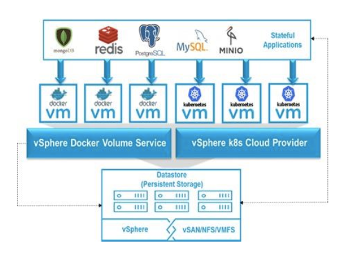

Introduction
Customers want to take advantage of container technology for running stateful, data intensive applications such as databases and modern cloud native applications. One of the significant barriers they face is the lack of out-of-the box persistent storage solution in the container eco-system since it requires building a robust, elastic, and programmable storage infrastructure with same level of security, data integrity, high availability, and storage services that are expected in a modern IT infrastructure.
Project Hatchway address this gap in vSphere environments by offering storage infrastructure choices for container environments, from hyper-converged infrastructure (HCI) powered by VMware vSAN™ to traditional SAN and NAS storage.
Project Hatchway offers tighter integration with container orchestrators such as Docker Swarm and Kubernetes to meet needs of DevOps community. It enables developers to consume storage infrastructure as code with freedom to choose the orchestrator of their choice abstracting complexity of underlying storage infrastructure. In addition, through Project Hatchway, data services such as snapshot, cloning, encryption, de-duplication, compression etc. are available at a container volume granularity. It empowers admins with visibility into storage to efficiently enforce SLAs and QoS through Storage Policy Based Management (SPBM). Container storage is carved out of proven VM storage, providing all of the enterprise capabilities and storage services already available for VM storage. This combination of container schedulers and vSphere storage delivers a complete solution for stateful applications.

Key Features
-
Proven Persistent Shared Storage: Deliver the resiliency and availability characteristics found in enterprise-class shared storage but that are lacking in the simple, local storage solutions often used for next-generation applications. With Project Hatchway and vSAN services, next-generation applications benefit from hyper-converged storage and compute as well as seamless application failover and rapid recovery. Advanced storage features, such as deduplication, compression and high availability, are all part of the core solution.
-
Programmable Operations: Streamline IT processes between application developers and IT operations teams by eliminating traditional, siloed roles with programmable access..
-
Elastic, Flexible Storage: Scale the environment out or up to meet changing application needs by non-disruptively adding new servers for additional compute and storage or expanding the capacity in existing nodes.
-
New Economies for Next-Gen Apps: Deploy HCI built on low-cost, commodity server components for next-generation application and container infrastructure to dramatically reduce capital costs. Developers benefit from an affordable all-flash solution, which means less time spent managing and tuning performance, leading to better end-user experiences.
vSphere Storage for Docker
The Docker Certified Volume Driver abstracts the underlying enterprise-class storage of the vSphere environment and makes it available as Docker volumes. It is easy to install and use from a developer perspective yet leaves storage visibility and control in the hands of a vSphere administrator. It supports data services such as cloning and snapshots, ensuring that data is both resilient and highly available. Additionally, when using vSAN as the underlying storage layer, storage based policies are fully supported to take full advantage of using hyper-converged infrastructure with containers on vSphere.
vSphere Storage for Kubernetes
Stateful containers orchestrated by Kubernetes can also leverage vSphere Storage (vSAN, VMFS, and NFS) with Kubernetes persistent volume, dynamic provisioning and StatefulSet primitives. It offers high availability to stateful applications, delivering resiliency and availability characteristics to cloud native applications.
Storage policy-based provisioning of persistent volumes enables applications to specify SLAs and quality of service at the granularity of container volumes. Database workloads scale on demand as a result of the tight integration with Kubernetes scheduler and features like StatefulSet. vSphere administrators can continue to use the VMware vCenter.
Resources
- Storage for Docker: https://vmware.github.io/docker-volume-vsphere/
- Storage for Kubernetes: https://vmware.github.io/vsphere-storage-for-kubernetes
- StorageHub: https://storagehub.vmware.com/#!/vsphere-storage/project-hatchway
Contact us
- containers@vmware.com
- VMware Code Slack (#docker #kubernetes)